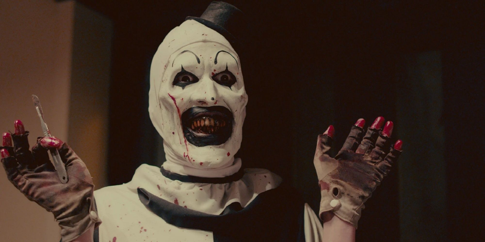

Depois de tantas mortes cruéis e sanguinolentas, é fácil presumir que Art, o palhaço assassino de TERRIFIER 3, foi inspirado em um serial killer igualmente impiedoso. Contudo, a verdade é que o personagem idealizado pelo diretor e roteirista Damien Leone surgiu a partir de uma ideia mais simples. Por isso, antes da volta do Art nos cinemas em 31 de outubro, conheça a história do carismático e terrível palhaço:
Esqueça os assassinos da vida real. Damien Leone criou Art depois de imaginar uma cena peculiar, mas bastante crível: um palhaço inconveniente, atormentando uma mulher no ônibus. Ela só queria voltar para casa depois de um dia de trabalho, mas aquele estranho tentava chamar sua atenção com brincadeiras infantis. Embora ela estivesse só, a interação era bastante inocente – a princípio. Porque conforme a mulher o rejeitava, o palhaço ficava mais e mais violento e intimidador.
Essa ideia de cena eventualmente deu origem ao curta The 9th Circle, parte da coletânea All Hallows Eve. Ali, o conceito do personagem ganhou corpo, conforme o ator Mike Giannelli, o primeiro intérprete de Art, apresentou alguns de seus maneirismos e personalidade. Contudo, foi na parceria entre Leone e o ator David Howard Thornton nos primeiros dois longas da franquia que o palhaço virou um ícone do terror moderno.
Hoje, muito se discute se Art é humano ou uma criatura sobrenatural. Há até quem especule que talvez ele seja apenas um médico que abandonou a carreira – o que explicaria seu interesse intenso, digamos, na anatomia humana. Porém, independentemente da explicação para a existência do personagem, fato é que Art está de volta para o que já é considerado o capítulo mais violento da franquia.
Ambientado cinco anos após os eventos do último filme, TERRIFIER 3 acompanha o palhaço assassino aterrorizando o Natal de velhos conhecidos e novas vítimas. Com planos ainda mais perturbadores e impiedosos, Art não pretende deixar sobreviventes nessa sua nova matança e, por isso, sair dessa vivo será altamente improvável.